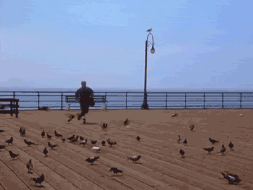

Meetup Frontend CSS/JS #1
MontpellierJS / Web Front/Privacy

Toi, public
Qui fait du front/UI/animation/print/TV ?
Ratio natif iOS/Android (hors WebViews) & web/print/vidéo ?
✨ CSS Houdini ✨
tl;dr : pour un accès direct au moteur CSS via JS
fini les hacks, on a un véritable accès au moteur
on peut créer nos propriétés, peinture, animation, layout
travail commencé circa 2016
suite logique du travail après WebComponents et ServiceWorkers
Motivations
Ouvrir les portes de la "magie" CSS et pouvoir étendre le moteur sans attendre les fabricants ou ticket les librairies tierces
Arrêter les hacks JS à base de addClass/el.style/translate3D(0,0,0)Séparer logique (JS) et style (CSS)
Garantir du rendu à 60fps hors thread UI principale
Task force Google, Mozilla, Apple
hacks JS = parce qu'on n'a pas le choixDivision en 6 grandes APIs
https://github.com/w3c/css-houdini-drafts (repo des specs)
https://drafts.css-houdini.org (specs)
- CSSOM API (CAPI)
- Properties/Values API (PVAPI)
- Paint API (PAPI)
- Web Animation API (WAAPI)
- Layout API (LAPI) *
- Font Metrics API (FMAPI) *
Oui, mais le support ?
https://www.chromestatus.com/features#houdini
https://ishoudinireadyyet.com
- CSSOM : shipped Chrome, ii FF, in dev SF
- PropValPI : partial 90% Chrome/SF, in dev FF
- Paint API : shipped Chrome, ii FF, in dev SF
- Animation API : partial 70% Chrome (sans chorégraphie, Q1 2020)
- Layout API : très partial Chrome, ii FF
- Font Metrics API : rien, uniquement les specs
CSSOM API
passer viteFini la concaténation et les typos, et enfin le try/catch
Nouveaux objets CSS* et .attributesStyleMap/.computedStyleMap
el.attributeStyleMap.set('opacity', CSS.number(0.3));
el.attributeStyleMap.has('opacity');
el.computedStyleMap().get('opacity').value // ex getComputedStyle
el.attributeStyleMap.delete('opacity')
el.attributeStyleMap.clear();
CSS.vw('100'); CSS.px(42);
CSS.percent('10'); CSS.ms(300);
new CSSMathSum(CSS.vw(100), CSS.px(-10)) // "calc(100vw + -10px)"
new CSSStyleValue.parse('transform', 'translate4d(...)'); // throw
Properties/Values API üîë
De la structure/typage dans des variables CSS custom
... on rappelle BEM/SASS/Less pour une structure de classes maintenableTypes supportés : length, number, %, color, image, url(), integer, angle, time, resolution, transform
CSS.registerProperty({
name: '--sky',
syntax: '<color>',
inherits: true,
initialValue: 'vanilla',
});SVP ne pas réinventer des horreurs lexicales comme couleur=color, ni substituer aux data-* HTML5
demo
Paint API üé®
Dessin 2D personnalisé avec background:paint(foo);
Introduction de PaintWorklet : analogie avec les ServiceWorkers pour le cache/offline/push notifs
Une Worklet est un JS short-lived, destructible par le moteur, déplaçable entre threads
But : qu'elle ne tourne pas dans la main thread (main JS sur thread UI sans rAf = lag) mais dans une autre thread
La Paint API donne un Canvas (2DContext) sans accès au DOM
sécurité : un Canvas chargé dans une CSS externe ne doit pas pouvoir lire/altérer le DOMdemo
Quelques remarques
lire https://github.com/w3c/css-houdini-drafts/issues
- Par sécurité, aucun accès au DOM. Le Canvas est étanche. Si besoin de DOM, alors faire un Canvas classique
- Tu n'as pas spécialement envie qu'un Canvas chargé depuis JS/CSS externe puisse repeindre des éléments du DOM
- exemple : redessiner champ input de saisie de CB
Web Animations API üé¨
Animations non blocking à 60fps relatives à la timeline et au scroll ... c'est surtout fait pour le scroll, et ça le fait bien
qui a déjà fait des parallaxes fluides ? des offsets / staggering ?AnimationWorklet/KeyFrameEffect, avec état pour se souvenir si le moteur stoppe la Worklet
Limite actuelle : séquence/chorégraphie à faire à la main. Un peu pénible, mais GroupEffect dans la spec
demo
Sprints et roadmap : https://www.chromium.org/teams/animations/animation-objectives
Pour le moment (Août), GroupEffect = enchaînement de KeyFrameEffects est désactivé
exemple : démarrer l'animation B quand la A est à 50%, démarrer A, B, C, D avec des offsets (= parallaxe/stagger)
Travail important de Yi Gu sur la Chorégraphie, Séquence et Staggering pour améliorer la spec https://github.com/yi-gu/group_effectQ1 2020
Layout API üñºÔ∏è
Quand flex ou grid ne suffisent plus (oui oui)
tl;dr : écrire son propre display:layout('monlayout');
https://houdini.glitch.me/layout
Rappel : c'est Bloomberg qui a sponsorisé grid dans WebKit (Igalia)Conteneur de LayoutChild/Fragments dans un ParentLayout
Le Parent a des borders, paddings : les Edges. Entre les Edges, on a des Constraints. Les LayoutChild sont dans ces Constraints et ont des Fragments
La clef : chaque Fragment a un inlineOffset/blockOffset pour le positionner par rapport à la box de son Child
C'est - en gros - du position:relative; dans un wireframe
c'est un peu plus compliqué que les autres API
penser à Tetris : une disposition de blocs dans un espace constraint
display:layout('L'); display:layout('4bar');
4bar est ici 4 Fragments empilés, L 3 et le 4e a un offsetLes blocs Fragments sont _parallélisables_ pour les moteurs next-gen (LayoutNG CR, WebRender FF) : quand le 4bar rentre et 'flashe' un Tetris, 4 lignes sont à effacer, et y-4 pour au dessus
Cas d'usage : architecture, UI normés (affichage dash militaire/voiture/avion, presse écrite, eBooks, ePub Comics)
des utilisaturs.trices de QuarkXPress/InDesign ?demo / illustrations
Font Metrics API üî†
... spec causée par la Layout API :
dessiner des blocs custom c'est cool mais : on a parfois besoin de gérer du texte dedans
exemples : faire son propre line-breaking, connaître la baseline dans un Fragment, les tailles réelles des ligatures Œ, Æ, محرك, et cætera ...
exposer seulement la font ne suffit pas : il faut descendre au niveau du glyphe dessiné par chaque navigateur
Démo avancées
avec Chrome Canary, Safari Technology Preview ou Firefox Aurora
https://css-houdini.rocks
notamment : Inner Borders, Masonry, Random Bubble Masks
Pour suivre / plus loin
https://www.chromium.org/teams (rétros 'agiles')
https://houdini.glitch.me (démos)
2020, rapprochement de Paint API et Web Animations API :
On peut imaginer un IDE en ligne 100% web, gratuit et open source qui remplacerait Sketch/Adobe XD, 100% extensible car basé sur des APIs ouvertes
Plus de "on peut pas le faire en CSS" : mais ça va demander des compétences de dessin canvas2D et animation... FullFullStack ?
Dark mode
iOS13, Android Q
@media (prefers-color-scheme: dark) {
body {
background-color: black;
color: white;
}
.darkside {
background-image:url('vador.jpg')
}
}